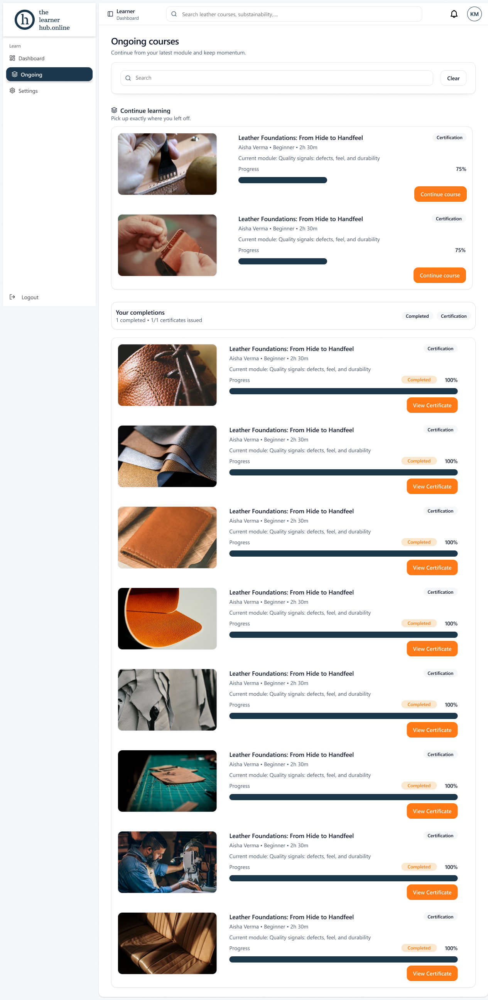
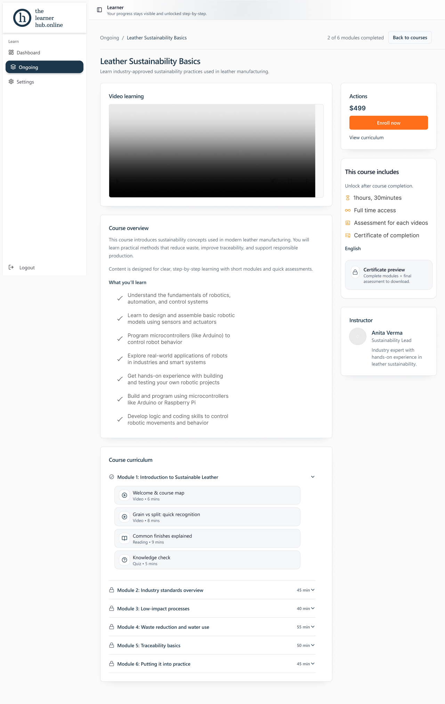

A learning platform where you can't skip ahead — purchase, learn, certify.
An end-to-end LMS for a niche leather-craft academy. Three roles — admin, instructor, learner — built around one disciplined idea: a learner moves forward only by completing what's in front of them.

01 — Project Overview
A focused space for serious craft learners
The Learner Hub is a learning-management platform built for a specialist leather-craft academy that sells structured, certified courses — from Leather Foundations to Sustainability Basics.
Unlike a broad MOOC, the academy's value is rigor: a certificate must actually mean the learner did the work. My job was to design a system that protects that integrity while still feeling light, modern, and motivating to move through. I owned the experience across all three roles, with the deepest focus on the learner's purchase-to-certificate journey.
02 — Problem Statement
When learners can jump anywhere, a certificate stops meaning anything.
The academy's earlier setup let people skim videos, jump to the final module, and still claim a credential. Completion was self-reported, progress was invisible, and instructors had no reliable signal of who actually learned.
Skippable content
Learners could leap straight to the certificate without watching, reading, or passing anything in between.
Invisible progress
No clear sense of "where am I" or "what's next" — people abandoned courses mid-way, unsure how much was left.
A diluted credential
Because anyone could finish, certificates carried little weight with employers and the wider craft community.
03 — Goals
What the redesign had to achieve
Goals split cleanly across the people the platform serves — but the learner's path was the north star.
Enforce real progression
Make it structurally impossible to advance without completing — and passing — the step before.
Make progress legible
At every moment the learner should know exactly how far they've come and what unlocks next.
Smooth purchase to enrolment
Turn a clear, confidence-building course page into a frictionless paid enrolment.
Make completion feel earned
Pay off the discipline with a certificate moment that feels like a genuine reward.
Stay calm and minimal
A focused, low-noise interface that respects the craft and keeps attention on learning.
04 — User Research
Listening before locking anything down
I spoke with hobbyist and professional learners, reviewed competitor LMS flows, and audited the academy's drop-off data to understand where motivation broke.
What we heard
- ""I lose my place constantly — I never know which video I stopped on."
- ""If I can just skip to the end, what's the point of the certificate?"
- ""I want to feel like I'm moving forward, not staring at a wall of 40 lessons."
- ""Show me what I'll get before I pay $499."
Insights → direction
- →Lock as a feature, not a punishment. Framed clearly, learners wanted structure.
- →Always answer "what's next". One visible next action beats a long menu.
- →Sell the outcome. Curriculum, time, and certificate must be obvious pre-purchase.
- →Celebrate completion. The reward has to feel proportional to the effort.
05 — Persona
The learner we designed for
Three roles exist, but the learner carries the experience — so the persona work centred on her.
Kavya M.
"I don't just want to watch — I want a certificate that proves I actually did the work."
Goals
- Build verifiable leather-craft skills from the ground up
- Always know what to do next without hunting for it
- Earn a credential she can show clients and employers
Frustrations
- Losing her place across long, unstructured courses
- Platforms that let anyone "finish" without learning
- Paying upfront without seeing what's inside
Behaviours
- Learns in short evening sessions between work
- Resumes on whatever device is nearby
- Motivated by visible progress and small wins
Needs from the product
- A clear, single "continue where you left off"
- Honest pre-purchase curriculum and pricing
- A certificate that feels genuinely earned
06 — User Journey
Purchase → Learn → Certify
The core loop, mapped stage by stage — what Kavya does, thinks, and feels, and where the design has to do the heavy lifting.
Discover
Browses the catalogue, opens a course page, reads the overview & curriculum.
"Is this the right level for me? What exactly will I learn?"
Transparent curriculum, time, language & instructor up front.
Purchase
Reviews price ($499) and what's included, taps Enrol now, completes payment.
"Is it worth it? Will I get a real certificate at the end?"
"This course includes" panel + certificate preview build confidence.
Learn
Works through modules in order — video, reading, then a knowledge check.
"I can see my progress and exactly what unlocks next."
Locked modules + per-module progress keep momentum honest.
Assess
Passes each module's quiz; the next module unlocks only on success.
"It's actually checking I understood — that feels fair."
Clear pass/fail states; retry without losing earned progress.
Certify
Hits 100%, unlocks and downloads the certificate, sees it on her dashboard.
"I earned this — and it proves I did every part."
Celebratory completion + issued-certificate record.
07 — Information Architecture
One platform, three role-based spaces
A single sign-in routes each role to its own area. Admin and instructor scaffolding exists, but the learner space is the most developed — and the only place where locking drives the structure.
- Auth
- Sign up / Log in
- Role routing admin · instructor · learner
- Learner space
- Dashboard
- Ongoing — continue learning · completions
- Course detail
- Video learning · overview · curriculum
- Module 1 — video · reading · quiz
- 🔒 Module 2–6 unlock on pass
- 🔒 Certificate 100% required
- Settings
- Instructor & Admin supporting roles
08 — Wireframes
Low-fidelity, structure first
Before any visual polish I blocked out the three screens that carry the journey, stress-testing the locked-progression logic in grayscale.
09 — Design System
A calm, two-tone craft system
Deep navy carries structure and trust; a single warm orange marks the one action that matters on each screen. Everything else stays out of the way.
Colour
Typography
400 / 500 · italic accents
400 / 500 / 600 / 700
400 / 500
Components
Actions & status
Lesson rows — the locking pattern
10 — Final Solution
The learner experience, end to end
Every screen answers two questions at a glance: where am I, and what unlocks next.

Course detail & enrolment. The whole offer is visible before paying — video preview, what you'll learn, time, language, instructor, and a certificate preview. Modules 2–6 sit visibly locked, setting the expectation of structured progression from the first screen.
Ongoing & completions. "Continue learning" surfaces the exact module to resume, while completed courses convert into issued certificates. Progress bars and completion badges give Kavya a constant, motivating read on momentum.
Lock with a reason
Locked items always state why and what unlocks them — never a dead end.
One orange per screen
Orange is reserved for the single primary action, so "what next" is never ambiguous.
Progress everywhere
Course, module and overall progress repeat the same visual language for instant legibility.
11 — Challenges
Where it got hard
Locking without frustrating
Hard gates can feel punishing — risking the very drop-off we wanted to fix.
Selling before access
Learners wouldn't pay $499 for content they couldn't see — but full preview undermines the model.
Three roles, one language
Admin, instructor and learner have different jobs but had to feel like one product.
12 — Results
A credential worth earning
Directional outcomes from a concept validation round with 14 learners and 2 usability sessions. Figures are illustrative of the prototype's measured uplift, not live production data.
"It finally feels like the certificate means something — and I never had to wonder what to do next."
— Usability participant, beginner learner
13 — Key Learnings
What I'm taking forward
Constraints can motivate
Framed honestly, structure isn't friction — it gives learners a reason to keep going and a goal to unlock.
Always answer "what next"
The single highest-leverage move was guaranteeing one obvious next action on every screen.
Trust is designed pre-purchase
Transparency about content, time and outcome did more for conversion confidence than any persuasion.